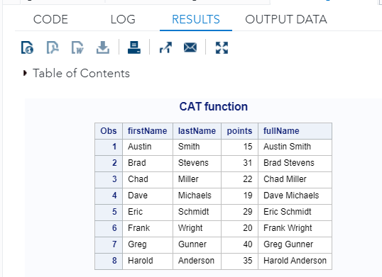

Chapter 11 String Functions and Basic Loops
In this chapter, we continue to introduce more SAS functions and loops for efficient data manipulation.
11.1 String Functions
SAS has a few convenient string functions that can be used to extract information from string variables or create new string variables.
Strings in SAS are the values that are enclosed within a pair of single or double quotes. Also, the string variables are declared by adding a space and $ sign at the end of the variable declaration. SAS has many powerful functions to analyze and manipulate strings.
We introduce some of these commonly used in string variable manipulation. For convenience, we will use PUT function to print out different manipulated strings in the log to see the values (results) of various string functions.
For those string functions that deal with blank (white space) in the string function, we will enclose the outputs in asterisk (*).
11.1.1 Concatenation CAT, CATS, CATX, and ||
Concatenation is a common operation in manipulating string variables. There are several functions in SAS for this purpose. We use several examples to illustrate how to use these string functions.
We first define a toy data set to be used in the examples.
/*create dataset*/
DATA cats_example;
INPUT firstName $ lastName $ points;
DATALINES;
Austin Smith 15
Brad Stevens 31
Chad Miller 22
Dave Michaelson 19
Eric Schmidt 29
Frank Wright 20
Greg Gunner 40
Harold Anderson 35
;
RUN;Concatenate Strings with Space in Between
/*create new dataset with concatenated strings*/
DATA CAT_data01;
set cats_example;
fullName = CAT(firstName, lastName);
PUT fullName;
RUN;
TITLE "CAT function";
PROC PRINT; /* no specified data set to print,
The system will print out the most
recently created data set*/
RUN;
Concatenate Strings with No Space in Between
/*create a new dataset with concatenated strings*/
DATA CATS_data;
SET cats_example;
fullName = CATS(firstName, lastName);
PUT fullName;
RUN;
/*view new dataset*/
PROC PRINT;
RUN;Concatenate Strings with Custom Delimiter
/*create a new dataset with concatenated strings*/
DATA CATX_data;
SET cats_example;
fullName = CATX('-', firstName, lastName);
PUT fullName;
RUN;
/*view new dataset*/
PROC PRINT;
RUN;An Alternative of CATX(): ||
The double vertical bar (||) joins strings. It’s the oldest method in SAS to combine strings.
/*create a new dataset with concatenated strings*/
DATA CATX_data02;
SET cats_example;
fullName = lastName|| ','|| firstName;
PUT fullName;
RUN;
/*view new dataset*/
PROC PRINT;
RUN;Although || is an old concatenation operator, it is still convenient to use. We will use this to explain some string functions that involve blank spaces.
11.1.2 SUBSTR
This function extracts a substring using the start and end positions. In case no end position is mentioned it extracts all the characters till the end of the string.
Syntax
SUBSTRN('stringval', p1, p2)
/* stringval is the value of the string variable.
p1 is the start position of extraction.
p2 is the final position of extraction. */Example
DATA string_examples;
LENGTH string1 $ 6 ;
String1 = 'Hello';
sub_string1 = SUBSTRN(String1, 2, 4) ;
/*Extract from position 2 to 4 */
sub_string2 = SUBSTRN(String1, 3) ;
/*Extract from position 3 onwards */
PUT x = string1; /* print this string in the log*/
PUT y = sub_string1; /* print this string in the log*/
PUT z = sub_string2; /* print this string in the log*/
RUN;The log file contains the resulting substring values.
11.1.3 String Function for Handling Blanks
TRIM and TRIMN
The
TRIMfunction copies a character argument, removes trailing blanks, and returns the trimmed argument as a result.If the argument is blank, TRIM returns one blank.TRIMis useful for concatenating because concatenation does not remove trailing blanks.The
TRIMNfunction copies a character argument, removes all trailing blanks, and returns the trimmed argument as a result. If the argument is blank,TRIMNreturns a string with a length of zero.TRIMNis useful for concatenating because concatenation does not remove trailing blanks.The
TRIMNandTRIMfunctions are similar.TRIMNreturns a string with a length of zero for a blank string.TRIMreturns one blank for a blank string.
DATA trim_trimn;
x = "A"||trim(" ")||"B";
y = "A"||trimn(" ")||"B";
z = "A"|| (" ")||"B";
PUT x;
PUT y;
PUT z;
RUN;STRIP, LEFT, and RIGHT
The
STRIPfunction removesleading and trailingspaces.The
LEFTfunction moves leading blanks to the end of the value. The length of the string does not change!The
RIGHTfunction returns an argument with trailing blanks moved to the start of the value. The argument’s length does not change.
Example
DATA strip_example;
name = ' Hitchy ';
char0 = "*"||Name||"*";
char1 = "*"||STRIP(Name)||"*";
char2 = "*"||LEFT(name)||"*";
char3 = "*"||RIGHT(name)||"*";
PUT char0;
PUT char1;
PUT char2;
PUT char3;
RUN;11.1.4 COMPRESS vs COMPBL
The
COMPRESSfunction returns a character string with specified characters removed from the original string. TheCOMPRESSfunction allows null arguments. A null argument is treated as a string that has a length of zero.The
COMPBLfunction removes multiple blanks in a character string by translating each occurrence of two or more consecutive blanks into a single blank.The
COMPRESSfunction removes every occurrence of the specific character from a string. If we specify a blank as the character to remove from the source string, theCOMPRESSfunction is similar to the COMPBL function.
However, the COMPRESS function removes all blanks from the source string. The COMPBL function compresses multiple blanks to a single blank and has no effect on a single blank.
| Number of Arguments | Results |
|---|---|
Only the first argument, source |
All blanks have been removed. If the argument is completely blank, then the result is a string with a length of zero. If you assign the result to a character variable with a fixed length, then the value of that variable will be padded with blanks to fill its defined length. |
Two arguments, source and chars |
All characters that appear in the second argument are removed from the result. |
Compressing Blanks
DATA compress_example;
a = '*'||'AB C D '||'*';
x = '*'||compress(a)||'*'; /* compress blanks */
y = '*'||compress(a,'A ')||'*'; /* compress `A` and blanks */
PUT a;
PUT x;
PUT y;
RUN;Compressing Vowels
DATA compress_example;
str = '123-4567-8901 e 234-5678-9012 i';
a = '*'||str||'*';
x = '*'||compress(str)||'*'; /* compress blanks */
y = '*'||compress(str,'ei ')||'*'; /* compress `e`,`i` and blanks */
PUT a;
PUT x;
PUT y;
RUN;COMPBL example
DATA compblanks;
string ='125 E. Main St.';
orig_str = "*"||string||"*";
street = "*"||compbl(string)||"*";
PUT orig_str;
PUT street;
RUN;11.1.5 Change Character Case Functions
Three SAS string functions can change character case: UPCASE LOWECASE, PROPCASE.
UPCASE: returns the uppercase of the textLOWCASE: returns the lowercase of the textPROPCASE: returns the word having uppercase in the first letter and lowercase in the rest of the letter.
DATA compblanks;
string ='125 E. Main St.';
orig_str = "*"||string||"*";
str01 = "*"||LOWCASE(string)||"*";
str02 = "*"||UPCASE(string)||"*";
str03 = "*"||PROPCASE(string)||"*";
PUT orig_str;
PUT str01;
PUT str02;
PUT str03;
RUN;11.1.6 Search Character Functions
Searching characters in the string function is practically important. For example, if we want to extract dose information from vial labels, we need a search function to be jointly used with other string functions.
There are several such string search functions in SAS:
ANYALNUM, ANYALPHA, ANYDIGIT, ANYPUNCT, ANYSPACE, NOTALNUM, NOTALPHA, NOTDIGIT, NOTUPPER, FIND, FINDC, INDEX, INDEXC, INDEXW, VERIFY
The names of the above search functions are self-explanatory. We will pick some of them to illustrate the use of this type of search function. the suffix NUM indicates numeric and ALPHA indicates character.
Example
STRING = "ABC 123 ?xyz_n_" More information about the SAS string function can be found in SAS documentation at https://support.sas.com/publishing/pubcat/chaps/59343.pdf
11.2 Basic Loops
Iterative DO loops, DO UNTIL, and DO WHILE provide a wide variety of ways to perform repeated actions on your SAS data sets over and over again without having to write duplicate code or execute the same statements multiple times manually.
11.2.1 DO -loop
Syntax
DO index-variable=start TO stop BY increment;
SAS statements
END
Example 1: Default increment 1 is used in the loop.
DATA DOLoop; /* SAS dataset */
DO i = 1 to 5; /* I will be a variable in the SAS data set*/
Y = i**2; /* values are 1, 4, 9, 16, 25 , Y will be
another variable in the data set.*/
OUTPUT; /* print out the value at the end of each iteration*/
END;
RUN;Example 2: By default, each iteration of a DO statement increments the value of the counter by 1, but you can use the BY option to increment the counter by other amounts, including non-integer amounts. For example, each iteration of the following DATA step increments the value i by 0.5.
DATA DOLoopBy; /* SAS dataset */
DO i = 1 to 5 BY 0.5; /* I will be a variable in the SAS data set*/
Y = i**2; /* values are 1, 1.5^2, 2^2 2.5^2,… Y will be
another variable in the data set. */
OUTPUT;
END;
RUN;11.2.2 DO-WHILE Loop
By default, each iteration of a DO statement increments the value of the counter by 1, but you can use the BY option to increment the counter by other amounts, including non-integer amounts. For example, each iteration of the following DATA step increments the value i by 0.5:
DATA DOLoopBy; /* SAS dataset */
DO i = 1 to 5 WHILE (y < 20); /* i will be a variable in the SAS data set*/
Y = i**2; /* values are 1, 4, 9, 16, 25 , Y will be
another variable in the data set. */
OUTPUT;
END;
RUN;11.3 RETAIN Statement and Longitudinal Data Operations
The
RETAINstatement simply copies retaining values by telling the SAS not to reset the variables to missing at the beginning of each iteration of the DATA step.If the
RETAINstatement is NOT used, SAS will return a missing value at the beginning of each iteration.
Next, we use an example to explain how RETAIN statement works.
DATA base;
INPUT id $
sales
vis_date mmddyy10.;
DATALINES;
a 235 07/11/1997
a 324 11/12/1997
b 321 06/15/1998
b 319 09/21/1998
b 357 11/11/1998
c 279 07/21/1997
c 302 10/20/1997
c 314 11/19/1997
c 298 12/27/1997
;
RUN;Data Manipulation Task
Count the number of sales per person
Calculate the total sales per person
Calculate average sales per person
The original data set is a longitudinal data set (i.e., each subject has multiple records taken over time). We need to work with the observation within groups.
DATA new;
SET base;
BY id;
RETAIN count total; /* retain the value during the DO-loop until the
last record of each subject. */
IF FIRST.id THEN DO; /*initialization at first record of each subject*/
count = 0; /* set count to 0 for each subject */
total = 0; /* set total to 0 for each subject */
END;
count = count + 1; /* accumulative calculation */
total = total + sales; /* accumulative calculation */
IF LAST.id THEN DO; /* find the last record of each subject */
mean = total / count; /* Calculate the mean for each subject */
Total_sale = total; /* Total sales */
Total_sale_count = count; /* Number of sales */
OUTPUT; /* print to the SAS data set: new */
END;
TITLE "Average Sales";
PROC PRINT DATA=new;
RUN;11.4 Learning COding by Examples
This section provides additional examples for practicing SAS string functions, loops, and related functions for effective and efficient data manipulation. Some of the string functions in the examples were not discussed in the previous sections. They are equally important as those covered in the previous sections.
/******************************************************************************
Topics: SAS Character Functions
1. Leading zeros and Blanks: INDEXC, SUBSTR, LENGTH, and LEFT
2. Substring Substitution: TRANSLATE
3. Handling Blanks: COMPRESS, COMPBL, TRIM
4: Concatenation: CATs family of functions
SAS DO-Block
1. DO-loop
2. DO-UNTIL loop
3. DO-WHILE loop
RETAIN Statement
1. RETAIN statement
2. Within Group Operation in Longitudinal Data
*****************************************************************************/
* OPTIONS PS= 74 LS = 74 NODATE NONUMBER;
/*NNNNNNNNNNNNNNNNNNNNNNNNNNNNNNNNNNNNNNNNNNNNNNN*/
/*************************************************/
/** SAS Character Functions ****/
/*************************************************/
/*NNNNNNNNNNNNNNNNNNNNNNNNNNNNNNNNNNNNNNNNNNNNNNN*/
LIBNAME week10 "";
DM 'CLEAR OUT';
DM 'CLEAR LOG';
/* 1. Leading zeros: INDEXC and SUBSTR */
/** Example 1 **/
DATA ZIP_CODE;
INPUT ID $ 1-7
NAME $ 9-22
COUNTY $ 24-30
STATE $ 31-32
ZIP $ 34 - 44
ER $ 46;
DATALINES;
A01101 Smith, Jean Orange NC 27515-2688 Y
A99126 Moore, Ronald Wake NC 27511-2414 N
B031073 Adams, Beth Wake NC 27705-2102 N
B001324 Polinski, Gus Durham NC 27606-4010 Y
;
RUN;
/* Extract the 5 digit zip code */
DATA Five_digit_ZIP;
SET ZIP_CODE;
ZIP5 = SUBSTR(ZIP, 1, 5);
KEEP NAME COUNTY ZIP ZIP5;
RUN;
PROC PRINT;
RUN;
/** Example 2: leading zeros **/
DATA LEADING_0;
INPUT NUMBER $;
NON_0 = INDEXC(NUMBER, "123456789"); /* given the index of the first digit
in any of the digits in the second
argument */
NEW_NUMBER = SUBSTR(NUMBER, NON_0); /* extract a substring starting from
the index (physical location) to
the end of the string */
DATALINES;
0123
117_0K
00033Y
;
RUN;
PROC PRINT DATA = LEADING_0;
RUN;
/* 2. LENGTH and SCAN
LENGTH returns the length of the value of the string;
SCAN returns the nth word in a character string.
By default, positive n from left to right;
negative n, from right to left. */
DATA CITY_STATE;
LENGTH CITY_STATE $ 30;
INPUT CITY_STATE & $; /* attention: &(ampersand) modifier */
/* & tells SAS that words separated by a *SINGLE* blank define a value of
a character variable. */
DATALINES;
King and Queen Court House VA
Saint Mary of the Woods IN
West Palm Beach FL
Outer Banks NC
;
RUN;
PROC PRINT;
RUN;
DATA SEP_SITY_STATE;
SET CITY_STATE;
LEN = LENGTH(CITY_STATE);
STATE = SCAN(CITY_STATE, -1); /* -1 => last word */
CITY = SUBSTR(CITY_STATE, 1, LEN-3); /* 1=starting character,
-3 = blank space +
2 state abbreviation */
RUN;
PROC PRINT DATA = SEP_SITY_STATE;
RUN;
/****************************************************************************
3. Functions for Handling Blanks
TRIM()--> removes the trailing blanks. however, if there are blank,
TRIM returns only one blank in case of multiple
consecutive blanks.
TRIMN()--> returns no blank in case of a blank string.
STRIP() --> removes both leading and trailing blanks
COMPRESS()--> removes all blanks
COMPBL() --> compresses multiple blanks into a single blank.
*****************************************************************************/
DATA WHITE_SPACES;
INPUT str_name $char14.;
DATALINES;
Mary Smith /* contains trailing blanks */
John Brown /* contains leading blanks */
Alice Park /* contains leading and trailing blanks */
Tom Wang /* contains leading, trailing, and multiple blanks
in between */
/* contains a blank string */
;
RUN;
PROC PRINT; RUN;
DATA HANDLING_BLANKS;
SET WHITE_SPACES;
raw_str_name = '*'||str_name||'*'; /* simple concatenation: we can see
the blanks in the original str_name.*/
strip = '*'||STRIP(str_name)||'*'; /* remove both leading and trailing blanks*/
trim_left = '*'||TRIM(LEFT(str_name))|| '*'; /* TRIM removes the trailing blanks; LEFT aligns the string
to the left. Use the LEFT
function and the TRIM function
together, we can first remove
leading blanks and then remove
trailing blanks, which will
return the same results as
the STRIP function. */
trimn_left = '*'||TRIMN(LEFT(str_name))||'*'; /* TRIMN returns no blank for
a blank string. */
compressed_name = COMPRESS(raw_str_name); /* COMPRESS removes all the blanks
from the string.*/
comp_BL = COMPBL(raw_str_name); /* COMPBL removes multiple blanks
compressed into original single blank*/
RUN;
PROC PRINT DATA = HANDLING_BLANKS;
RUN;
/*********************************************************************
4 Concatenate Strings and Handle Blanks: Play with CATs
CAT() function concatenates character strings without removing
leading or trailing blanks.
CATT() function concatenates character strings and removes
trailing blanks.
CATS() function concatenates character strings and removes
leading and trailing blanks.
CATX() function concatenates character strings, removes leading
and trailing blanks, and insert separators between each string.
*********************************************************************/
/** Concatenating strings: || and CAT
Sometimes we may want to concatenate two
or more strings in managing string variables.
CAT() has several variants **/
DATA CATS_FUN;
SET WHITE_SPACES;
LENGTH cat_str catt_str cats_str $16 catx_str $20;
text='Hello';
/** new variables by concatenating strings **/
cat_str = cat ('*',str_name,'*'); /* equivalent to: || -->
simple concatenating of two strings */
catt_str = catt('*',str_name,'*'); /* equivalent to: TRIM || or TRIMN ||;
--> removes only trailing blanks */
cats_str = cats('*',str_name,'*'); /* equivalent to: STRIP ||; --> removes
leading and trailing blanks */
catx_str = catx('!',text,str_name); /* equivalent to: STRIP || separator;
removes leading and trailing and
insert separators in between strings */
RUN;
PROC PRINT DATA = CATS_FUN;
RUN;
DATA Concatenation0;
INFILE DATALINES MISSOVER; /* missing values at the end of the record */
LENGTH first last $20;
INPUT first $ last $ ;
DATALINES;
jone smith
john wayne
bill
phil hodge
;
RUN;
/** CAUTION: There are some white spaces in the original names due to
the specification of the length. You cannot see this white space in the
HTML output, but you can see these blanks in the list out the window.
*********** ASSUMING X1, X2, X3, and X4 are four strings ********
LEFT(X1) -> left aligns a character and removes leading blanks.
CAT(of X1-X4)== X1||X2||X3||X4 --> simply combines strings
CATS(of X1-X4)==TRIM(LEFT(X1))||...||TRIM(LEFT(X4)) --> removes leading
and trailing blanks
CATT(of X1-X4)== TRIM(X1)||TRIM(X2)||TRIM(X3)||TRIM(X4) --> removes only
trailing blanks
CATX(of X1-X4)== TRIM(LEFT(X1))||SP||...||SP||TRIM(LEFT(X4)) --> removes
leading and trailing
SP = separator and insert separators in between strings **/
/* check the output in the list output window! */
DATA Concatenation1;
SET Concatenation0;
NAME = catx(", ", of last first ); /* removes leading and trailing and
add a separator in between strings */
NAME_CAT = cat(of last first); /* simple concatenating (with blanks
in between) strings */
NAME_CATS = cats(of last first); /* concatenating (with no blanks) and
then removing leading and trailing blanks*/
NAME_CATT = catt(of last first); /* concatenating (with no blanks) and then
removing the trailing blanks*/
/* Testing a few other */
CATS_NAME_CAT = CATS(NAME_CAT); /* removes the trailing and leading
(In this particular example, no leading
and railing blanks found in Name_CAT
variable!) */
CATTS_NAME_CAT = CATT(NAME_CAT);
RUN;
PROC CONTENTS DATA = Concatenation1;
RUN;
PROC PRINT; RUN;
/* 6. TRANSLATE => converts characters that are similar digits
to actual digits: for example, Oo -> 00
LI -> 11 */
DATA STREET;
INPUT ID $ 1-7
STREET_ADRR $ 9- 30;
DATALINES;
A01101 4 Conner St.
A99126 13O Market St.
B031073 442I Glenwood Ave.
B001324 18o Cannon Dr.
A03121 10L Cannon Dr.
B991401 2IO Ear Ave.
A021313 3O1 Luck Dr.
;
RUN;
/* The following dataset corrects the error to convert to actual digits
and then use a concatenating function to make a correct address
concatenating function and operator:
|| ==> concatenates two strings
*/
DATA DIGIT_CORRECTION;
SET STREET;
DIGIT = SCAN(STREET_ADRR, 1); /* extract the first word of the string */
NEW = TRANSLATE(DIGIT, "00111", "OoLIl"); /* corrected digits */
RUN;
PROC PRINT; RUN;
/*NNNNNNNNNNNNNNNNNNNNNNNNNNNNNNNNNNNNNNNNNNNNNNN*/
/*************************************************/
/** SAS Loops ****/
/*************************************************/
/*NNNNNNNNNNNNNNNNNNNNNNNNNNNNNNNNNNNNNNNNNNNNNNN*/
/** 1. DO-loop **/
DATA DOLoop; /* SAS dataset */
DO i = 1 TO 5; /* I will be a variable in the SAS data set */
Y = i**2; /* values are 1, 4, 9, 16, 25 , Y will be
another variable in the data set. */
OUTPUT; /* OUTPUT ==> writes every record to the SAS
data set. Only the value in the
last iteration will be written to
the SAS data set if OUTPUT was not
used. */
END;
RUN;
PROC PRINT; RUN;
DATA DOLoopBy; /* SAS dataset */
DO i = 1 TO 5 BY 0.5; /* I will be a variable in the SAS data set*/
Y = i**2; /* values are 1, 4, 9, 16, 25 , Y will be
another variable in the data set. */
OUTPUT; /* Write the value generated in each iteration
to the SAS data set */
END;
RUN;
PROC PRINT; RUN;
/** FOR-each: LAG() function **/
DATA FOR_EACH;
DO V = 1, 1, 2, 3, 5, 8, 13, 21; /* DO-loop enumerate all values */
lag_V = lag(V); /* LAG function: drop the last value and a missing
as the initial value */
Y = V/lag(V);
OUTPUT; /* Write the value generated in each iteration
to the SAS data set */
END;
RUN;
PROC PRINT; RUN;
/** 2. DO-WHILE: WHILE clause to iterate as long as a certain condition holds**/
DATA DO_WHILTW_Loop; /* SAS dataset */
DO i = 1 to 6 WHILE (y < 20); /* I will be a variable in the SAS data set*/
Y = i**2; /* values are 1, 4, 9, 16, 25 , Y will be
another variable in the data set. */
OUTPUT;
END;
RUN;
PROC PRINT; RUN;
/** 3. DO-UNTIL: UNTIL clause to iterate as long as a certain condition holds **/
DATA investment;
DO UNTIL (value >= 50000); /* looping until value >= 50000 */
value + 1200; /* initial value = 0, after this statement,
value = 1200 */
value + value * 0.05; /* The result: 1200 + 1200*0.05 = 12600 */
year + 1; /* The result: 0 + 1 = 1 */
OUTPUT; /* write the value generated in each
individual iteration. */
END; /* closing the loop: stopping rule meets */
RUN;
PROC PRINT; RUN;
/** 4. Nested loop **/
DATA design;
DO i = 10 to 40 by 10;
DO j = 3 to 15 BY 3;
OUTPUT;
END;
END;
RUN;
PROC PRINT DATA = design;
RUN;
/** 4. Single loop application: The following example uses DO-loop to
define a new variable with updated values in each iteration. You
define the raw dataset first and then add the new variable with
updates using the DO loop. **/
/* Example 1: DO-loop in a DATA step with INPUT-DATALINES statements */
DATA CD_INVEST (DROP = i); /* i is only used in loop statements,
drop this meaningless variable and
keep the data clean. */
INPUT Type $ 1-7
AnnualRate
Months;
/* data modification starts here */
Investment = 5000; /* add a new variable to the data with an
initial value */
DO i = 1 TO Months; /* DO loop to update the value of INVESTMENT
in each iteration */
Investment + (AnnualRate/12)*Investment; /* updating INVESTMENT */
* OUTPUT; /* OUTPUT should NOT be used here, otherwise,
It will generate MONTHLY amounts!!! */
END;
FORMAT Investment dollar8.2; /* formatting INVESTMENT to have a nice
formatted display */
DATALINES;
03Month 0.01980 3
06Month 0.02230 6
09Month 0.02230 9
12Month 0.02470 12
18Month 0.02470 18
24Month 0.02570 24
36Month 0.02720 36
48Month 0.02960 48
60Month 0.03445 60
;
RUN;
PROC PRINT DATA = CD_INVEST;
RUN;
/** Example 2: two data steps to create the same data set **/
/* Step 1: create a data set*/
DATA CD_INVEST_RAW;
INPUT Type $ 1-7
AnnualRate
Months;
DATALINES;
03Month 0.01980 3
06Month 0.02230 6
09Month 0.02230 9
12Month 0.02470 12
18Month 0.02470 18
24Month 0.02570 24
36Month 0.02720 36
48Month 0.02960 48
60Month 0.03445 60
;
RUN;
/* Step 2: Add new variable */
DATA CD_INVEST_GAIN;
SET CD_INVEST_RAW;
/* data modification starts here */
Investment = 5000; /* add a new variable to the data with
an initial value */
DO i = 1 TO Months; /* DO loop to update the value of INVESTMENT
in each iteration */
Investment + (AnnualRate/12)*Investment; /* updating INVESTMENT*/
OUTPUT;
END;
FORMAT Investment dollar8.2; /* formatting INVESTMENT to have a
nice formatted display */
DROP I;
RUN;
PROC PRINT DATA = CD_INVEST_GAIN;
RUN;
/*NNNNNNNNNNNNNNNNNNNNNNNNNNNNNNNNNNNNNNNNNNNNNNNNNNNNNNNNNN
/***********************************************************
Working with Groups within
Longitudinal Data Sets: RETAIN and DO-loop
Task: (1). the cumulative sum of the total score of each subject.
(2). Count the number of records of each subject
(3). Cumulative average of each subject.
***********************************************************
NNNNNNNNNNNNNNNNNNNNNNNNNNNNNNNNNNNNNNNNNNNNNNNNNNNNNNNNNN*/
/** Typical longitudinal data **/
DATA BASE;
INPUT ID $
SALES
VIS_DATE mmddyy10.;
DATALINES;
a 235 07/11/1997
a 304 11/12/1997
b 321 06/15/1998
b 319 09/21/1998
b 357 11/11/1998
c 279 07/21/1997
c 302 10/20/1997
c 314 11/19/1997
c 298 12/27/1997
;
RUN;
/* sort by ID and Date, */
PROC SORT DATA = BASE;
BY ID VIS_DATE;
RUN;
/** With NO RETAIN:
1. New variables that are in the original data will be
initialized as missing values in each iteration.
2. Any arithmetic operation that involves a missing value
will result in a missing value. **/
DATA NEW_NO_RETAIN;
SET BASE;
BY ID;
IF FIRST.id THEN DO; /* initialize the variables */
count = 0;
total = 0;
END; /* 1st iteration */ /* 2nd iteration */
count = count + 1; /* count = 0 + 1 = 1 */ /* count = * + 1 = * */
total = total + sales; /* total = 0 + 235 = 235 */ /* total = * + 304 = * */
avg = total/count; /* avg = 235/1 = 235 */ /* avg = */* = * */;
OUTPUT; /* write out records in each iteration */
RUN;
PROC PRINT DATA = NEW_NO_RETAIN;
RUN;
/** With RETAIN:
1. RETAIN will retain the value from the previous iteration.
2. New variables will not be initialized as missing values
since the retained value from the previous iteration
will be used. **/
DATA NEW_RETAIN;
SET BASE;
BY ID;
RETAIN count total; /* retain the value in the current iteration to the next
iteration */
IF FIRST.id THEN DO; /* initialize the variables */
count = 0;
total = 0;
END; /* 1st iteration */ /* 2nd iteration */
count = count + 1; /* count = 0 + 1 = 1 */ /* count = 1 + 1 = 2 */
total = total + sales; /* total = 0 + 235 = 235 */ /* total = 235+304 = 539 */
avg = total/count; /* avg = 235/1 = 235 */ /* avg = 539/2 = 269.5 */;
OUTPUT; /* Write out the new records in each iteration. */
RUN;
PROC PRINT DATA = NEW_RETAIN;
RUN;
/******************************************************/
/** Only output the last observation of each subject**/
/******************************************************/
DATA NEW_RETAIN_LAST_OBS;
SET BASE;
BY ID;
RETAIN count total; /* retain the value in the current iteration to
the next iteration */
IF FIRST.id THEN DO; /* initialize the variables */
count = 0;
total = 0;
END;
count = count + 1; /* count on the right hand is 0 */
total = total + sales; /* total on the right hand is a missing value */
avg = total/count;
IF LAST.id THEN DO;
avg = avg*1;
OUTPUT; /* Write out the average when reading the last
record of each subject */
END;
RUN;
PROC PRINT DATA = NEW_RETAIN_LAST_OBS;
RUN;